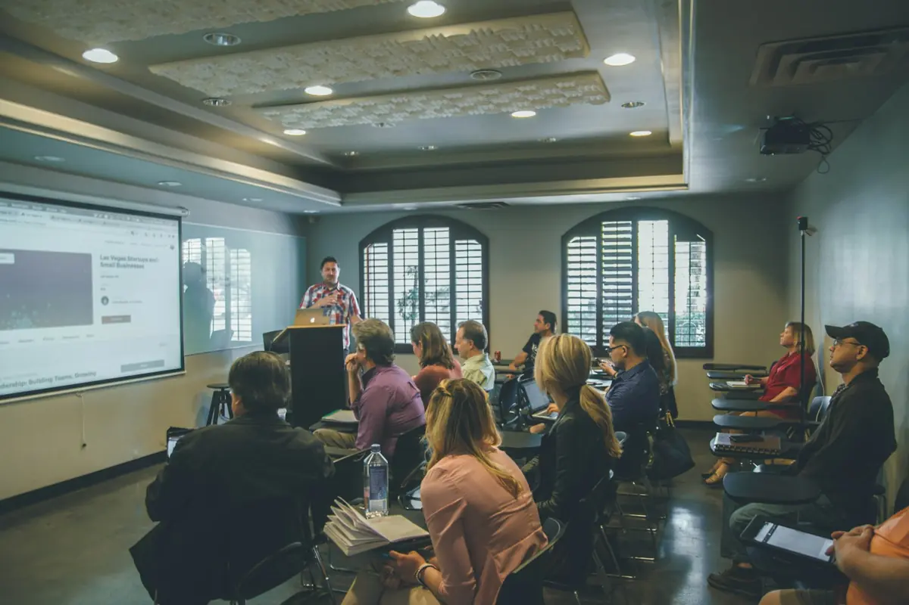
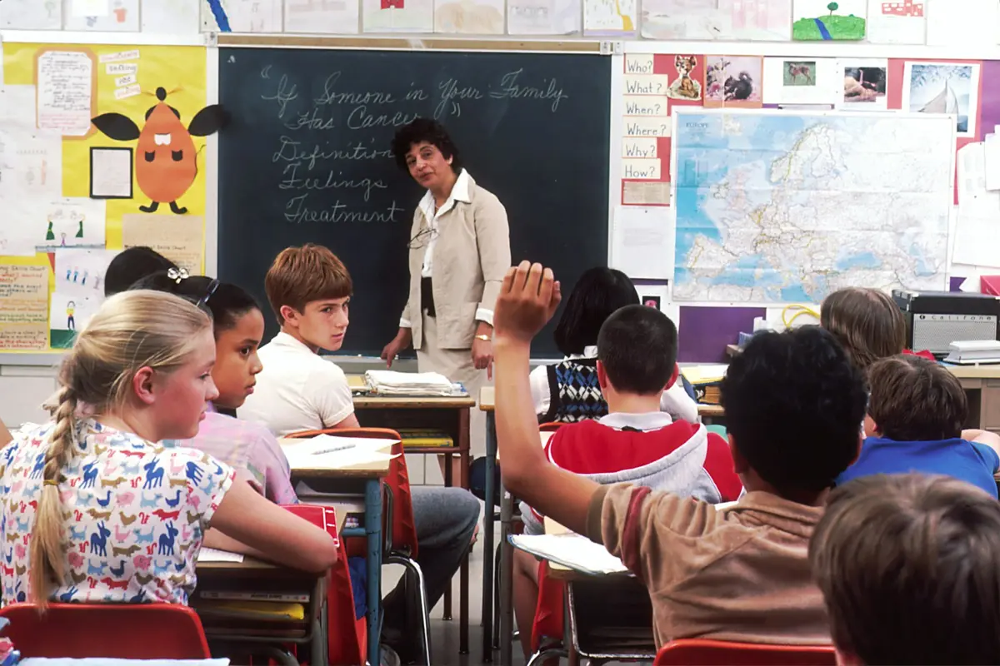
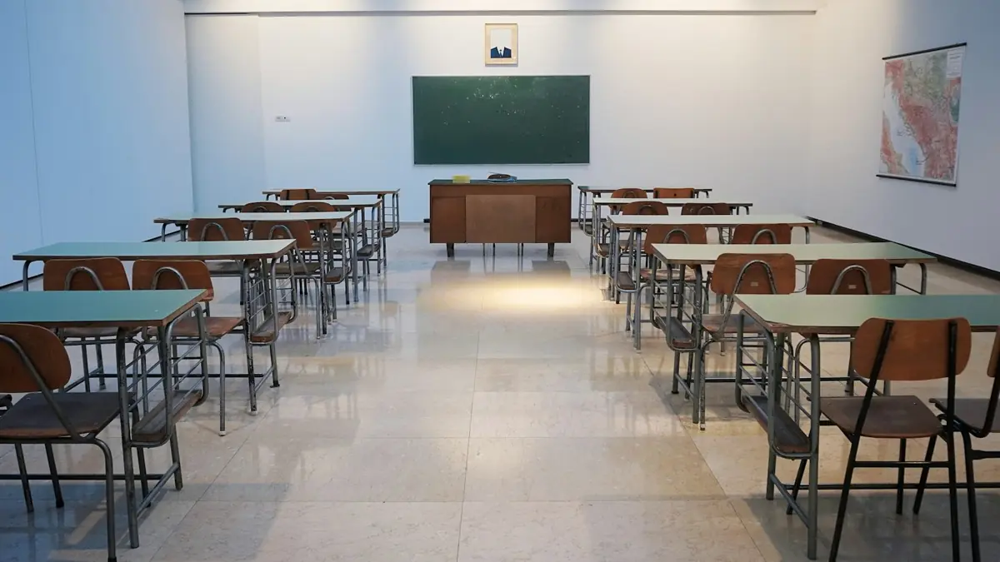

AuDHD - kiedy autyzm spotyka ADHD
Jednodniowe szkolenie (6 h) dla całej rady. Jak rozumieć i wspierać ucznia z podwójną diagnozą.
od 2 200 zł za grupę
Akredytowana placówka doskonalenia nauczycieli z Radomia: szkolenia rad pedagogicznych w Państwa placówce, kursy kwalifikacyjne i studia podyplomowe. Radom, Piotrków Trybunalski i online w całej Polsce.
lub zadzwoń: 48 307 09 50
Ten sam zespół organizuje szkolenie dla całej rady, kurs dla jednej osoby i studia podyplomowe. Zacznij od swojej roli.

NauczycielStudia podyplomowe, cykl Nauczyciel Przyjazny Spektrum, kursy na wychowawcę i kierownika wypoczynku. DyrektorSzkolenia online z organizacji pracy szkoły, studia Zarządzanie oświatą i obsługa BHP placówki.Przyjedziemy do szkoły lub przedszkola i przeprowadzimy szkolenie w terminie dopasowanym do harmonogramu rady, z programem dobranym do tego, z czym zespół mierzy się na co dzień.
Jednodniowe szkolenie (6 h) dla całej rady. Jak rozumieć i wspierać ucznia z podwójną diagnozą.
od 2 200 zł za grupę
Cykl 3 modułów (24 h) dla nauczycieli pracujących z uczniami w spektrum autyzmu. Zaświadczenie po każdym module, certyfikat po cyklu.
od 220 zł/os., cykl 600 zł/os.
Warsztat dla nowozatrudnionych nauczycieli i specjalistów z grą rozwojową Heros Navigares. 4-5 h, grupy 6-12 osób.
od 1 400 zł za grupę
Praktyczny warsztat z gotowymi schematami pracy projektowej. 4 godziny dydaktyczne.
wycena indywidualna
Inny temat? Opiszcie potrzebę rady, a dobierzemy trenera i program.
Stacjonarnie: województwo mazowieckie, łódzkie, świętokrzyskie i lubelskie. Zdalnie: cała Polska.
Zapytaj o termin i wycenęSzkolenia otwarte, na które zapisuje się pojedynczo. Online przez MS Teams, z dostępem do materiałów na platformie edukacyjnej.
Nauczyciel Przyjazny Spektrum, moduł II. Online, 8 godzin dydaktycznych.
Nauczyciel Przyjazny Spektrum, moduł III. Styczeń 2027, online.
Część pisemna w Komitecie Okręgowym w Radomiu. Część ustna 27 lutego 2027.
Czwartek, 13.00-15.15, online. Prowadzi Marek Sternalski.
Sobota, 9.00-12.15, online. Prowadzi Dorota Sokołowska, b. Mazowiecka Kurator Oświaty.
Terminy i ceny ze strony edukacja2001.pl, stan na 12 listopada 2026.
Dodatkowe kwalifikacje do pracy w szkole macierzystej lub innej placówce. Zjazdy weekendowe w Radomiu lub Piotrkowie Trybunalskim, część zajęć online, materiały dostępne przez całą dobę na platformie.
Kursy kwalifikacyjne w Radomiu i obsługa szkoły w zakresie bezpieczeństwa. Po każdym odpłatnym kursie zaświadczenie.
Kursy dające kwalifikacje do pracy na koloniach, obozach i półkoloniach, zgodnie z rozporządzeniem MEN w sprawie wypoczynku dzieci i młodzieży.
wychowawca 480 zł, kierownik 280 zł
Ostatnia edycja: Radom, maj 2026. O kolejną zapytaj w biurze.

Kurs kierowników i opiekunów wycieczek: planowanie, dokumentacja, bezpieczeństwo. Pierwsza pomoc przedmedyczna z ćwiczeniami RKO na fantomach i z AED.
wycieczki 180 zł (140 zł od 3 osób), pierwsza pomoc 230 zł
Radom. Kurs wycieczkowy w terminie otwartym.

Szkolenia okresowe i przeciwpożarowe, ocena ryzyka zawodowego, postępowanie powypadkowe, instrukcja bezpieczeństwa pożarowego i stała obsługa szkoły bez własnej służby BHP.
wycena dla placówki
Radom, Piotrków Trybunalski i okolice.
Jesteśmy akredytowaną placówką doskonalenia nauczycieli o zasięgu ogólnokrajowym (decyzja Mazowieckiego Kuratora Oświaty z 29 sierpnia 2024). Szkolimy nauczycieli, kadrę kierowniczą szkół i pracowników samorządów. Przez 30 lat przeszkoliliśmy tysiące nauczycieli na dwusemestralnych kursach kwalifikacyjnych i innych formach doskonalenia.
Od kilku lat prowadzimy też punkt rekrutacyjny Uczelni Nauk Społecznych w Łodzi na studia podyplomowe dla nauczycieli.
Magdalena Szokalska-KępkaDyrektor ODiDZ Edukacja 2001
ul. Żeromskiego 65, pok. 202 (I piętro)
26-600 Radom
Biuro czynne w dni powszednie 9.00-15.30